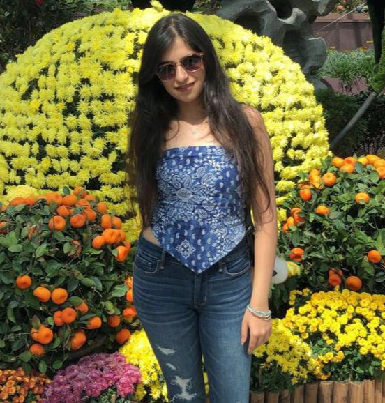

THE FIVE LOVE LANGUAGES
By Mehek Teckchandani
July 8, 2020
The five love languages describe the way we feel loved and appreciated. Depending on our individual personality types, we may feel loved differently than how our partners do. Understanding and decoding these ways could give you a chance at a better relationship.
I am no expert, but I came across a video a few days ago and this is something I thought I could share.
Often in relationships, even when everything seems great and you’re totally in love with your significant other, something feels off and you’re not the happiest you could possibly be. This happens when the two of you aren’t speaking each other’s primary love language.
Now, What does one mean by ‘primary love language’?
It’s that language of love that when spoken, keeps your love tank completely fueled and helps your relationship to function smoothly.
There are five love languages:
- Words of affirmation
- Acts of service
- Quality time
- Receiving gifts
- Physical touch
Generally, everyone speaks all of the above love languages but most of us have a primary one. And even if our partner speaks all of the languages except that one, our love tank is partly empty, because in spite of everything else, he/she fails to communicate with us in the language that we resonate with the most and thereby making us feel partially out of sync with our partner.
And for obvious reasons none of us want to feel that way or make our partners feel so. Not only do we want our love tanks to be full but we also want the same for our partners.
So this quarantine, sit down with your partners, read more about this and figure out what your primary love languages are. In most cases, your primary love language is going to be different from that of your partner’s and thus, the both of you would have to put some effort into this to ensure the highest level of each other’s happiness.
It might be difficult to speak a love language that you just don’t resonate with but all your partner needs to see is that you’re willing to make an effort to keep him/her happy.
And it’s just the little things to be honest,
If your partner’s primary love language is words of affirmation, tell him/her that you’re proud of them, that they look great in that outfit;
If it’s acts of service, make sure you fold your blanket, keep the dishes in the kitchen or whatever other act of service that your partner would appreciate;
If it’s quality time, no matter how busy you are, make sure that you remove some time for your partner and give them your undivided attention during that period;
If it’s receiving gifts, you don’t need to get something too fancy or exorbitant, it could be their favorite flower, you could write them notes or go all out, whatever suits you;
And if it’s physical touch, it could be as simple as holding their hand, a shoulder rub or a peck on their cheek.
Give this a thought, try to read more about it. There’s a book called The 5 love languages by Gary Chapman, you could read it alone, or with your partner to identify your love languages.
So let’s keep those love tanks fueled, let’s understand our partners better, let’s try to make them the happiest and let’s at least attempt to speak their love language.
About Mehek
I’m currently pursuing a finance degree. A firm advocate of being kind and giving yourself as much love as you can.